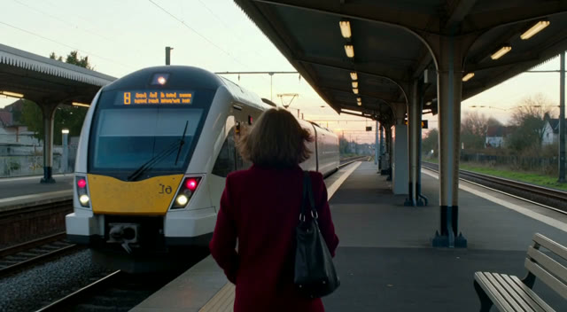

Dials on a First Frame
Image-to-video holds the look. Loosen the hold, and the dial comes back.
Give H3 a first frame and a look dial mostly stops working: the picture's light and colour carry through the clip,
however hard you push. These clips show what happens when the first frame is held more loosely with MAINodes'
H3 Cond Strength node (guide_strength below its default 0.999), using the h3_evil_sinister
dial on one scene. Pika H3 Flex, 6 steps, seed 42 for every clip, so treat it as a lead, not a rule.
the problemA first frame pins the look
Every image-to-video clip below starts from this picture (the first frame of the text-to-video control):

In text-to-video, sinister +1 turns the warm dusk cold and blue. Given the picture as a first frame, even +4 leaves the warm sunset in place; only the train changes.
No first frame vs a first frame at the default pin
overviewThe whole grid
Rows: text-to-video, the default pin, and guide strength 0.3, 0.2, 0.1. Columns: control, +1, +2, +4, +6. Black cells were not rendered. No sound in the grid; the clips further down have it.
| guide strength | opening vs the picture (pixel difference) | darkening at +4 | cold shift at +6 |
|---|---|---|---|
| 0.999 (default) | 4 | none | – |
| 0.3 | ~11 | +8 | +5 |
| 0.2 | ~20 | +9 | +7 |
| 0.1 | ~28 | +12 | +19 |
| text-to-video +1 | – | +18 | +18 |
How close the opening stays to the picture depends only on the guide strength, not on the dial strength.
a recipeMost of the look, the same opening
Guide strength 0.1 with the dial at +4 gives about two thirds of the text-to-video darkening while the clip still opens on the picture. At 0.2 and 0.3 the opening stays closer to the picture and you get about half.
Guide strength 0.1
Guide strength 0.3
the fun partPast +4: the dial becomes content
Push to +6 at a loose pin and sinister stops changing the light and starts changing what is there. The clip still starts exactly on the picture, then turns into something sinister: at guide 0.2 a spiky, dragon-like head pushes into the frame; at 0.1 the woman becomes a skull-faced figure under a cold, overcast sky.
Sinister +6
notesWhat else we tried
- More strength at the default pin (up to +4): nothing reaches the light; the push moves the train instead.
- Leaving the picture's rows in the text unshifted: no help. The first frame also enters the video model directly, where a dial never reaches.
- A reference picture (Ref2V) instead of a first frame: it holds the look just as firmly.
- Simplest advice still holds: if you can, apply the look dial when you make the first frame.
One scene and one seed. All numbers, settings and the earlier steps are in the Dials research notes (T5 to T5j).